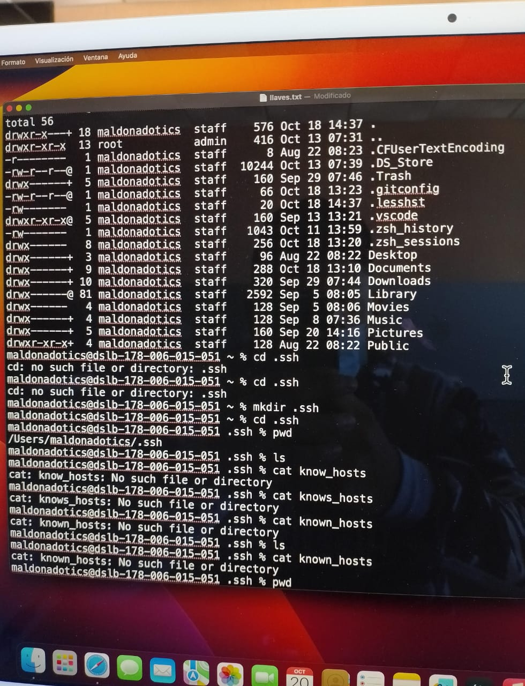

Mi nombre es Marco Antonio Mendoza Calva, nací en Apan Hidalgo, el día 26 de marzo del 2004 , en la niñez viví en tlahuelinpan hidalgo ,en el cual permaneci hai hasta los 5 años donde realice mis estudios de kinder en el jardin de niños Mariano Silva y Aceves ,posteriormente al cuncluir mi nivel prescolar me vine a vivir en donde actualmente radico en Mixquiahuala de juarez ,Hidalgo donde realice mis estudios de primaria en la escuela 16 de enero ,nivel secundaria en Gregorio Torres Quintero actualmente tengo 19 años de edad, soy un estudiante de universidad que está en primer semestre y tengo el propósito del poder terminar una ingenieria y obtener un título universitario. Soy egresado del CBTIs 199 como Técnico Laboratorista Clínico y concluí satisfactoriamente la media superior con un promedio general de 8.0
La Ingeniera me llama la atención y es muy interesante ya que me permite conocer nuevas innovaciones que vayan surgiendo día a día me interesa mucho el tema de redes y programación ya que me parece muy importante , también me gusta saber más a profundidad como es,como funciona , para que sirve todas las cosas que tengan que ver con la tecnología, el cómo repararlas o como hace que funcionen y como es la creación de programas en todos los ámbitos para la función de alguno,siempre me a llamado la atención ya hoy en día son una innovación que va a avanzando y son mas importantes al trascurso de los años es por ello que me interesa aprender mas sobre ellas
Soy de Mixquiahuala de Juárez de Hidalgo es un municipio de los ochenta y cuatro municipios que conforman en el Estado de Hidalgo (lugar rodeado de mezquites)”mizqui-yahual-lan”, se encuentra en la orilla del rio Tula ,en el sur de lo que hoy se llama EL VALLE DEL MEZQUITAL .Por tradición se sabe que algunos de los primeros pobladores de Mixquiahuala estuvieron instalados en la cima del cerro del Elefante donde se notan algunas ruinas; después se trasladaron a la pirámide de Doninja, hoy Taxhuadá, para que al consumarse la conquista en el pueblo se establecieron definitivamente en el lugar donde ahora existe (1546). Sin embargo el primer dato es poco creíble ya que las ruinas se localizaron en la cima del Elefante y da más la impresión de haber sido una fortificación que un asentamiento humano. La evangelización de Mixquiahuala estuvo a cargo de los frailes franciscanos que en el año de 1539 se establecieron en la ciudad de Tula. El 14 de junio de 1865 el ejército francés llegó a Mixquiahuala de Juárez y le indicó al Presidente Don Manuel Gálvez solicitar una tregua para informar a la población, la cual siguiendo el ejemplo de Juárez, se negó a reconocer al imperio aún a costa de las consecuencias, ya que el ejército francés amenazó con quemar el pueblo. Actualmente, toda esta región es muy rica, sobre todo en agricultura, ya que cuenta con tierras de riego, minas que surten de grano a todos los alrededores, lo mismo que de forrajes; en general es una ciudad progresista con mucho porvenir.
1.-Escuchar musica
2.-Jugar con mi mascota
3.-Salir a lugares tranquilos
4.-correr
5.-ver peliculas en series

Autor: Marco Antonio Mendoza Calva Correo: 230110330@itsoeh.edu.mx
{kind=link}